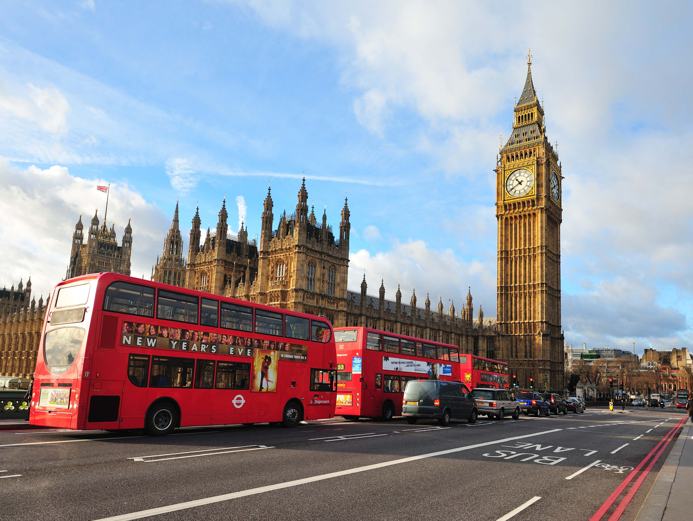

Volver a Promociones
Londres

Londres es una ciudad global, centro neurálgico en el ámbito de las artes, el comercio, la educación, el entretenimiento, la moda, las finanzas, los medios de comunicación, la investigación, el turismo o el transporte.9 Es, junto a Nueva York, el principal centro financiero del mundo10 11 12 y una de las áreas metropolitanas con mayor PIB.13 14 Londres es también una capital cultural mundial,15 16 17 18 la ciudad más visitada si atendemos al número de visitas internacionales19 y tiene el mayor sistema aeroportuario del mundo según el tráfico de pasajeros.20 Asimismo, las 43 universidades de la ciudad conforman la mayor concentración de centros de estudios superiores de toda Europa.21 En el año 2012 Londres se convirtió en la única ciudad en albergar la celebración de tres Juegos Olímpicos de Verano.
volver al listado